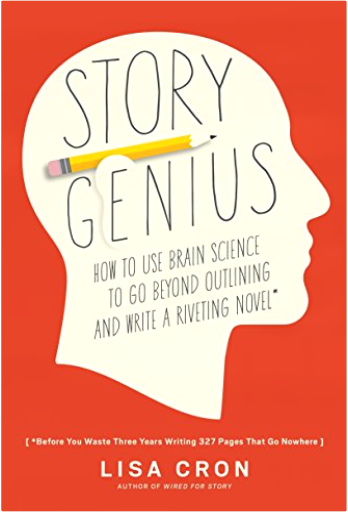
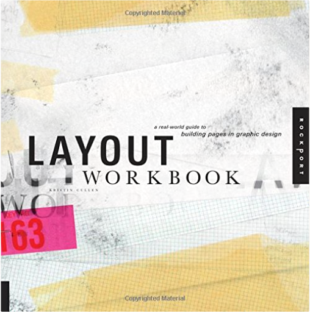
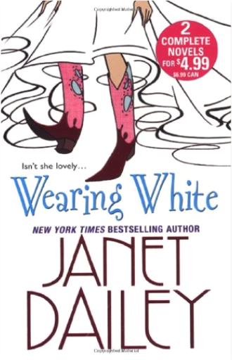
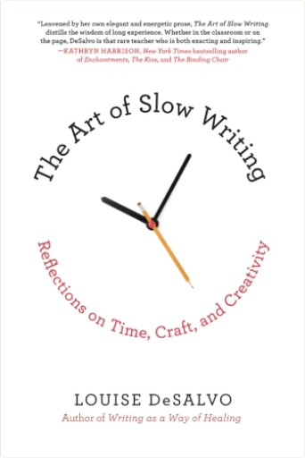
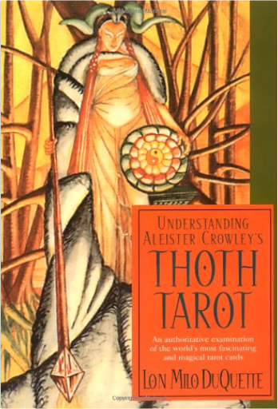

 Story Genius: How to Use Brain Science to Go Beyond Outlining and Write a Riveting NovelLisa Cron Following on the heels of Lisa Cron's breakout first book, Wired for Story, this writing guide reveals how to use cognitive storytelling strategies to build a scene-by-scene blueprint for a riveting story.
It’s every novelist’s greatest fear: pouring their blood, sweat, and tears into writing hundreds of pages only to realize that their story has no sense of urgency, no internal logic, and so is a page one rewrite.
The prevailing wisdom in the writing community is that there are just two ways around this problem: pantsing (winging it) and plotting (focusing on the external plot). Story coach Lisa Cron has spent her career discovering why these methods don’t work and coming up with a powerful alternative, based on the science behind what our brains are wired to crave in every story we read (and it’s not what you think).
In Story Genius Cron takes you, step-by-step, through the creation of a novel from the first glimmer of an idea, to a complete multilayered blueprint—including fully realized scenes—that evolves into a first draft with the authority, richness, and command of a riveting sixth or seventh draft. MoonchildAleister Crowley This is a novel by Crowley about a magical war between a white lodge ( led by Iff ) and a black lodge ( led by Douglas ) over an unborn child, the "moonchild" of the title, with the action moving between London, Paris and a villa in Naples. It was written in 1917 in New Orleans.  Layout Workbook: A Real-World Guide to Building Pages in Graphic DesignKristin Cullen An inspired resource for creating meaningful design, Layout Workbook is one of five volumes in Rockport's series of practical and inspirational books that cover the fundamental areas of graphic design. In this edition, author Kristin Cullen tackles the often perplexing job of nailing down a layout that works. More than a collection of great examples, this book is a valuable resource for students, designers, and creative professionals who seek design understanding and inspiration. The book illuminates the broad category of layout, communicating specifically what it takes to design with excellence. It also addresses the how and why of the creative process. Cullen approaches layout with a series of step-by-step fundamental chapters addressing topics such as design function, inspiration, process, intuition, structure, organization, the interaction of visual elements, typography, and design analysis. Pop Manga: How to Draw the Coolest, Cutest Characters, Animals, Mascots, and MoreCamilla D'Errico, Stephen W. Martin Renowned manga artist and comics creator Camilla D'Errico's beginner's guide to drawing her signature Japanese-style characters.
From comics to video games to contemporary fine art, the beautiful, wide-eyed-girl look of shoujo manga has infiltrated pop culture, and no artist's work today better exemplifies this trend than Camilla D'Errico's. In her first instructional guide, D'Errico reveals techniques for creating her emotive yet playful manga characters, with lessons on drawing basic body construction, capturing action, and creating animals, chibis, and mascots.
Plus, she gives readers a behind-the-scenes look at her character design process, pointers on creating their own comics, and prompts for finishing her drawings. Pop Manga is both a celebration of creativity and an indispensible guide that is sure to appeal to manga diehards and aspiring artists alike.  Wearing WhiteJanet Dailey Dear friend,
True love changes everything...and true love endures. These timeless stories prove that twice over—and I enjoyed revising them for you.
A Tradition Of Pride
Shaded with old magnolias and towering loblolly pines, the columned Alexander house stands as a symbol of Southern history—and Lara Alexander Cochran still calls it home. But she's lonely. Ransom MacQuade, the plantation manager, can see that plain as day. And he intends to make her happy as soon as he can get her alone in the moonlight...
The Mating Season
Designer duds...New York attitude...being in the spotlight. Through it all, model Jonni Starr never forgot where she came from: the Starr ranch in Kansas. The road home is long and winding, but she just might find the love she needs at the end of it. Because Gabe Stockman, the ranch's rugged general manager, is waiting for her with open arms...
Remember when you first fell in love? It's time to get that feeling again...
With love,
Janet Dailey Holly's Inbox: Scandal in the CityHolly Denham Praise for Holly's Inbox
"The next Bridget Jones."
-Entertainment Weekly
"Funny, captivating, and completely addictive."
-Jill Mansell
"Email-tastic!"
-OK! Magazine
Dear Holly, isn't it shocking...?
Things are finally going Holly Denham's way: she's in love, she's getting the recognition she deserves at work, and her friends and family have graciously opted to avoid disaster for the moment.
Just when Holly is starting to settle into her new life, scandal erupts and Holly finds herself-and her in box-at the center of a gossip whirlwind that threatens everything she's worked so hard for.
Written entirely in emails, this follow-up to the UK smash hit Holly's Inbox will keep you glued to its pages as the scandal running rampant in the city threatens to ruin Holly's hard-earned and long-awaited happiness.
"A very funny read [with] a marvelous twist at the end..."
-Romantic Times
"What a hoot. I started this book on a Sunday morning and by evening I had finished it. I couldn't put it down."
-Cheryl's Book Nook
"A winner from first page to last."
-The Romance Studio |  The Art of Slow Writing: Reflections on Time, Craft, and CreativityLouise DeSalvo In a series of conversational observations and meditations on the writing process, The Art of Slow Writing examines the benefits of writing slowly. DeSalvo advises her readers to explore their creative process on deeper levels by getting to know themselves and their stories more fully over a longer period of time. She writes in the same supportive manner that encourages her students, using the slow writing process to help them explore the complexities of craft. The Art of Slow Writing is the antidote to self-help books that preach the idea of fast-writing, finishing a novel a year, and quick revisions. DeSalvo makes a case that more mature writing often develops over a longer period of time and offers tips and techniques to train the creative process in this new experience.
DeSalvo describes the work habits of successful writers (among them, Nobel Prize laureates) so that readers can use the information provided to develop their identity as writers and transform their writing lives. It includes anecdotes from classic American and international writers such as John Steinbeck, Henry Miller, Virginia Woolf and D. H. Lawrence as well as contemporary authors such as Michael Chabon, Junot Diaz, Jeffrey Eugenides, Ian McEwan, and Salman Rushdie. DeSalvo skillfully and gently guides writers to not only start their work, but immerse themselves fully in the process and create texts they will treasure. The Most Scenic Drives in America, Newly Revised and Updated: 120 Spectacular Road TripsEditors of Reader's Digest The all-in-one trip planner and travel guide-now totally revised and updated-will steer you down the most scenic road every time.
The all-in-one trip planner and travel guide-now totally revised and updated-will steer you down the most scenic road every time. From Florida's Road to Flamingo to Hawaii's Oahu Coastal Loop . . . from British Columbia's Sea to Sky Highway to Cape Cod's Sandy Shores . . . each featured road trip is pictured in stunning full color and described in vivid text, keyed to an easy-to-follow newly revised map. Whether you choose a drive in a far corner of the continent or a back road in your own state, this book is your ticket to North America's most beautiful byways.
Drives are grouped in four pictured-packed sections-Western, Mountain, Central, and Eastern states and provinces-and are accompanied by detailed, easy-to-use maps. New drives featuring some of Canada's most stunning destinations have been added. As a bonus, handy Trip Tip sidebars include:Mileagebest season to travelnearby attractionsspecial events"learn more" contact information including website addressesA special feature called Star Routes offers thumbnail sketches of shorter but especially scenic roads located in the same region as the main tours. Additional boxes highlight distinctive characteristics of the areas, including local plants, animals, customs, foods, and a variety of historical events.
Whether on the road or in the comfort of your easy chair, this newly revised Reader's Digest travel guide will be a welcome companion. Fatal RevenantStephen R. Donaldson The long-awaited sequel to The Runes of the Earth returns readers to the Land-and opens with the reunion of Linden Avery and Thomas Covenant!
Linden Avery, who loved Thomas Covenant and watched him die, has returned to the Land in search of her kidnapped son, Jeremiah. As Fatal Revenant begins, Linden watches from the battlements of Revelstone when the impossible happens-riding ahead of the hordes attacking Revelstone are Jeremiah and Covenant himself, apparently very much alive.
Here in the Land, Jeremiah is healed of the mental condition that had kept him mute and unresponsive for so many years. He is full of life, and devoted to Covenant. But Covenant is strangely changed. Sarcastic and bragging, he no longer seems like the man whom Linden adored. And yet he says he has a plan: he will take her and Jeremiah to a place where they can find a pure source of Earthpower and, after he has achieved his own purposes, Linden will be free to use that great power to go home, to take Jeremiah home, or to do anything else she sees fit. Even though she distrusts the seemingly different man he has now become, how can she make any choice except to follow him?
Their journey will cover unimaginable distances through the Land-even through time itself-and will test Linden's courage again and again. In the end, fulfilling her destiny will call for a terrible leap of faith: Can she give up everything she thought had been restored to her, for the sake of the Land? Living Judaism: The Complete Guide to Jewish Belief, Tradition, and PracticeWayne D. Dosick In Living Judaism, Rabbi Wayne Dosick, Ph.D., author the acclaimed Golden Rules, Dancing with God, and When Life Hurts, offers an engaging and definitive overview of Jewish philosophy and theology, rituals and customs. Combining quality scholarship and sacred spiritual instruction, Living Judaism is a thought-provoking reference and guide for those already steeped in Jewish life, and a comprehensive introduction for those exploring the richness and grandeur of Judaism.  Understanding Aleister Crowley's Thoth TarotLon Milo Duquette Aleister Crowley's Thoth Tarot was his final opus, the culmination of a lifetime of occult study and practice. With artist Lady Frieda Harris, he condensed the core of his teaching into the 78 cards of the tarot. Although Crowley's own Book of Thoth provides insight into the cards, it is a complicated, dated book. Now, in clear language, Lon Milo DuQuette provides everything you need to know to get the most out of using the Thoth deck. Why Marx Was RightTerry Eagleton In this combative, controversial book, Terry Eagleton takes issue with the prejudice that Marxism is dead and done with. Taking ten of the most common objections to Marxism—that it leads to political tyranny, that it reduces everything to the economic, that it is a form of historical determinism, and so on—he demonstrates in each case what a woeful travesty of Marx's own thought these assumptions are. In a world in which capitalism has been shaken to its roots by some major crises, Why Marx Was Right is as urgent and timely as it is brave and candid. Written with Eagleton's familiar wit, humor, and clarity, it will attract an audience far beyond the confines of academia. Why Marx Was RightTerry Eagleton In this combative, controversial book, Terry Eagleton takes issue with the prejudice that Marxism is dead and done with. Taking ten of the most common objections to Marxism—that it leads to political tyranny, that it reduces everything to the economic, that it is a form of historical determinism, and so on—he demonstrates in each case what a woeful travesty of Marx's own thought these assumptions are. In a world in which capitalism has been shaken to its roots by some major crises, Why Marx Was Right is as urgent and timely as it is brave and candid. Written with Eagleton's familiar wit, humor, and clarity, it will attract an audience far beyond the confines of academia. |


 Made with Delicious Library
Made with Delicious Library